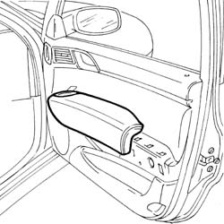

7005E18 Front side door armrest - R.R.
- Path
- Procedures > 70 FITTINGS > 7005 passenger compartment front side doors > 7005E FRONT DOOR TRIM > 7005E18 Front side door armrest - R.R.
- Kind
- repair procedure (removal / refitting; the operation number is the code)
- Applies to
- all engines; all production periods
- Interactive page
- https://sloeber94.github.io/elrnDB-lThss/en/#/109137
Applies to: all engines; all production periods
 Removing
Removing
 Refitting
Refitting1. Release the armrest and remove it.

Applies to: all engines; all production periods
Refitting
Removing- Check that the retaining springs are not damaged.
- Fit the armrest in the housing until the click of the retaining springs can be heard.
Topics that link to this page (22)
- 5505B11 FRONT DOOR built in WIRING (one) left or right - R.R.
- 5570T90 FRONT SPEAKER (one), left or right - R.R.
- 5580E72 AERIAL - PASSIVE ENTRY - front door (one), left or right - R.R.
- 7005A05 Front side door WATER GUARD PROTECTION - R.R. or Position
- 7005A28 Front side DOOR LIMITER - R.R.
- 7005A42 Front side door SEAL, left or right - R.R.
- 7005C11 Front side door EXTERIOR HANDLE - R.R.
- 7005C15 Front side door LOCK BARREL (in handle) - R.R.
- 7005C55 Front side door INTERIOR OPENING relay DEVICE (with handle) (one) R.R. for repair or Replace
- 7005C57 Front door opening device (one), left or right, complete with rod lock - R.R.
- 7005D15 front side door descending window glass (one), left or right - r r
- 7005D18 Front side door DESCENDING WINDOW GLASS CHANNEL (one), left or right - r r
- 7005D21 Front side door descending window glass front guide (one), left or right r r
- 7005D30 GLASS SCRAPER (internal) (one) left or right for front side door DESCENDING WINDOW GLASS - R.R.
- 7005D33 Front side door descending window glass door inner guide channel (one), left or right - r r
- 7005E08 Front side door INTERIOR PANEL - R.R.
- 7005E42 Front side door frame MOUDLING - R.R.
- 7005M11 Driver's front door electric window control switch - R.R.
- 7005M12 Passenger front door electric window control SWITCH - R.R.
- 7005M21 Left or right front door electric WINDOW - R.R.
- 7005N21 Central locking MOTOR/LOCK ASSEMBLY for one front door, left or right - R.R.
- 7005R30 ELECTRICALLY operated DOOR MIRROR (one) - R.R.